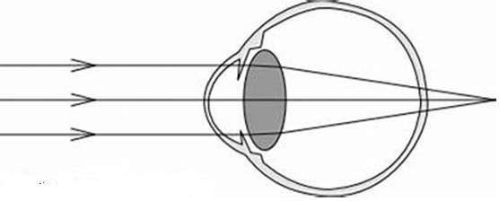
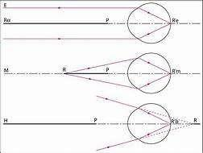
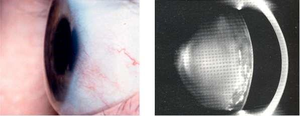

Refraction · Hypermetropia
Hypermetropia (Hyperopia - Far Sightedness): definition & etiology
When the eye is at rest (accommodation is completely relaxed); parallel rays come to a focus Behind the retina.
The far point (Punctum Remotum - PR) of the hypermetropic eye
- Rays coming from a point on the retina:
- Leave the eye divergent.
- And appear to come from an imaginary (virtual) point behind the eye.



Etiology
- Axial hypermetropia:
- Infants are born with small eyes, i.e. they have axial hypermetropia.
- Their eyes grow gradually and become emmetropic, around 7 years of age.
- If they do not reach the proper length, hypermetropia will remain.
- Refractive hypermetropia: Decreased refractive power of the eye.
- It includes 2 types:
- a) Curvature hypermetropia: Flattening of cornea (cornea plana).
- b) Index hypermetropia:
- Increase in the R.I. of lens cortex e.g. cortical cataract.
- Hypoglycemia (controlled diabetes): more aqueous flows in the lens leading to decreased refractive index of lens.
- It includes 2 types:
- Abnormal position of the lens: e.g. posterior dislocation.
- Aphakia.